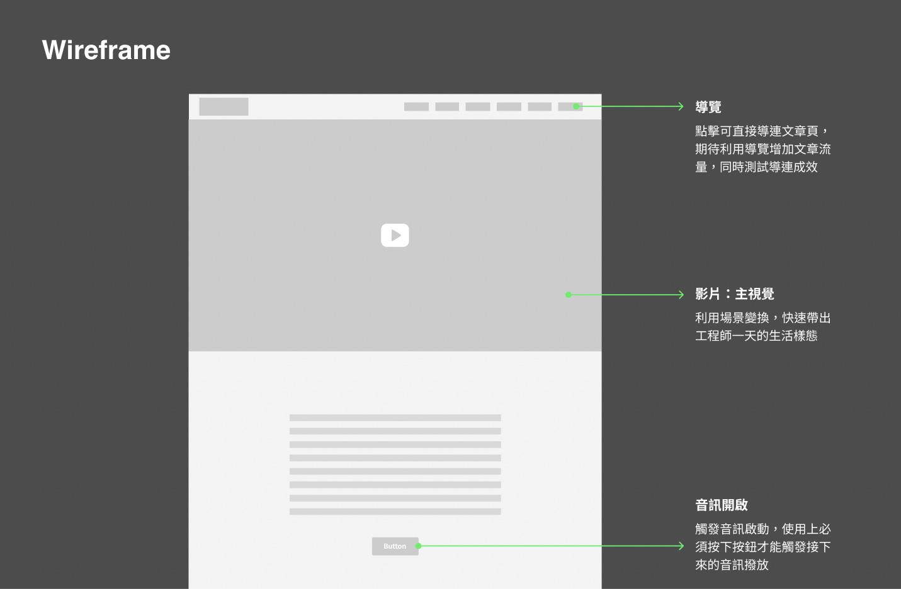
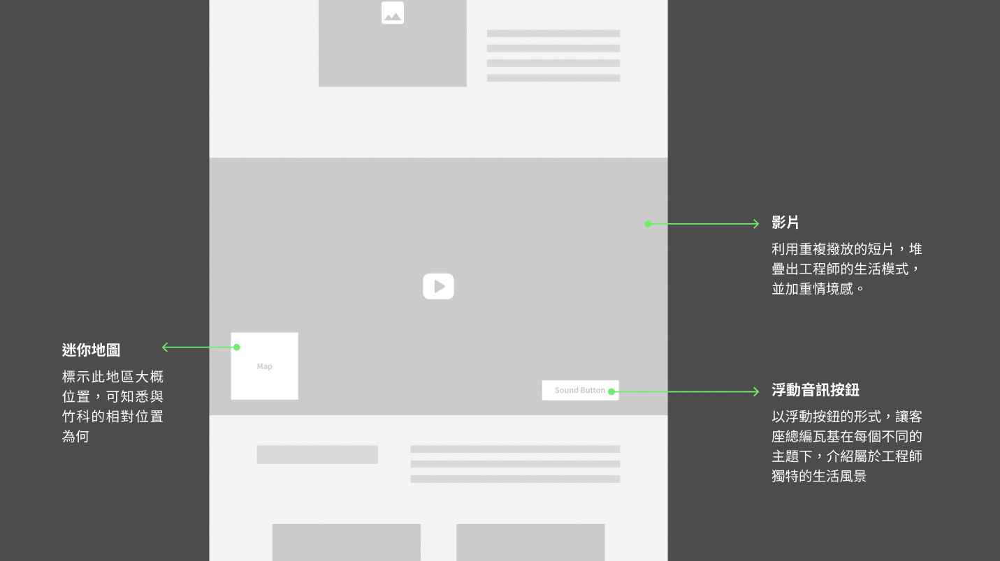

專案簡介
2022年半導體產業職缺創下7年新高，求職者每人平均可分到3.7份工作，但有別於如何入行的討論，卻鮮少有人呈現半導體產業真實的工作與生活面貌。本專案為如實呈現半導體工程師的苦與樂，邀請到曾在台積電服務10年並擔任主管職的內行人——閱讀前哨站站長瓦基擔任客座總編輯，透過食衣住行等角度，揭開半導體產業下的工作人面紗。

設計概念
進入網站時透過動態Loading的頁面設計增加了趣味性，為了在閱讀感官上營造沉浸式體驗感，運用了音效與文章搭配出現的手法。當滑鼠滾動至特定區域，便會出現該場景的環境音效，以及客座總編輯引領的語音說明，使整體在閱讀體驗上更加生動，使用者如同親身走進新竹，體驗身臨其境的感覺。
整體色彩為了展現科技感的主題，以螢光色搭配深色背景作為主要配色，將竹科、科技等記憶透過顏色進行印象強化。版面上則透過錯落的照片、文字版型、與簡單的動畫效果，讓閱讀動線更具活力，不易感到枯燥無趣。


將半導體工程師的真實生活面貌劃分為住、行、富、房、孩五大面向，透過影片與照片等形式，規劃影音腳本，將工程師所見所聞透過影音搭配文字的形式呈現。